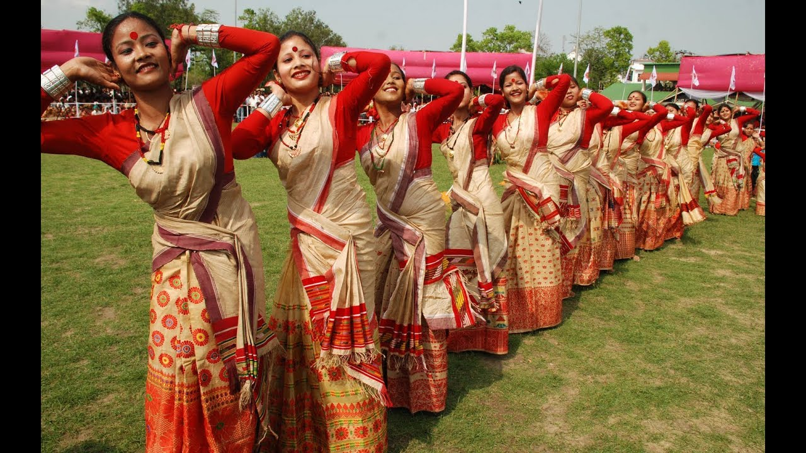
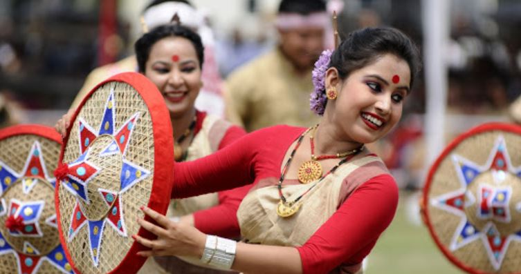
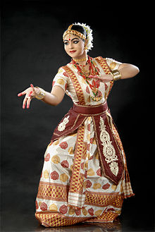
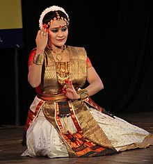
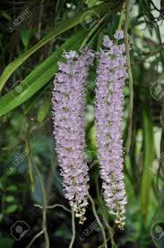
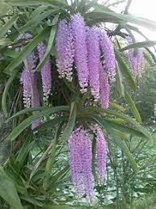

State Festival:
Bihu


Bihu is a set of three important Assamese festivals in the Indian state of
Assam-Rongali or Bohag Bihu observed in April, Kongali or Kati Bihu observed in October, and Bhogali or Magh Bihu observed in January.
State Dance:
Satriya


It is a dance-drama performance art with origins in the Krishna-centered Vaishnavism monasteries of Assam,
State Flower:
Foxtail Orchids


It is famous for its use as an hair-ornament worn by Assamese women during folk dance Bihu on the onset of spring